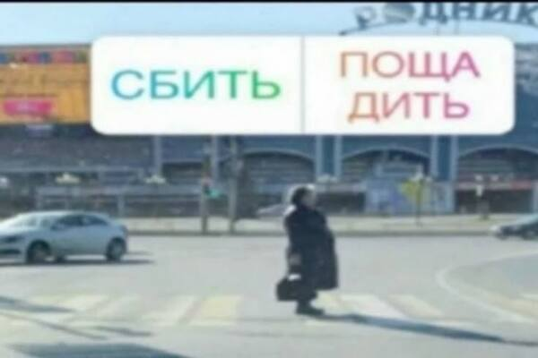
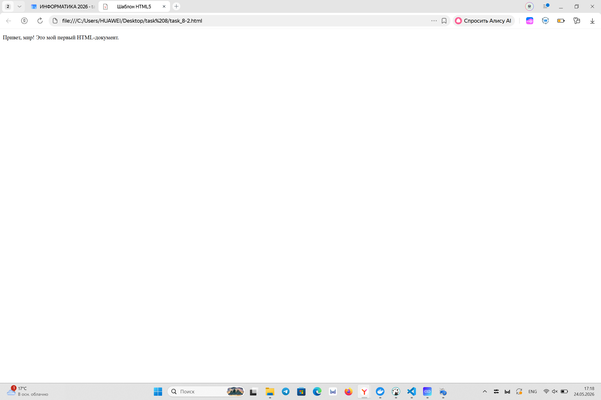
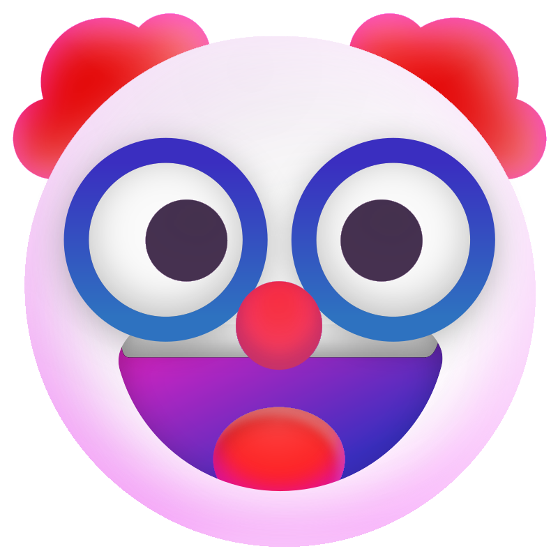

Формат: JPG. Идеально подходит для фотографий, так как позволяет сжимать изображения без заметной потери качества при сохранении множества цветовых оттенков.

Формат: PNG. Используется для скриншотов, так как обеспечивает четкость линий, текста и поддерживает прозрачность, не допуская артефактов сжатия.

Формат: SVG. Это векторный формат. Он подходит для логотипов, так как изображение можно масштабировать до любого размера без потери качества.
Формат: GIF. Оптимален для простой анимации, так как позволяет воспроизводить циклические движущиеся изображения в небольшом весе файла.